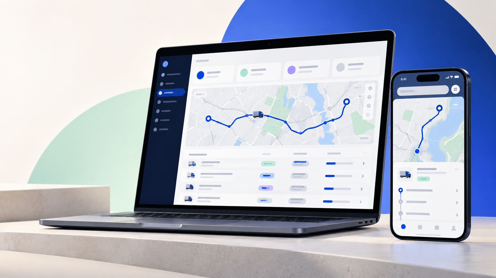
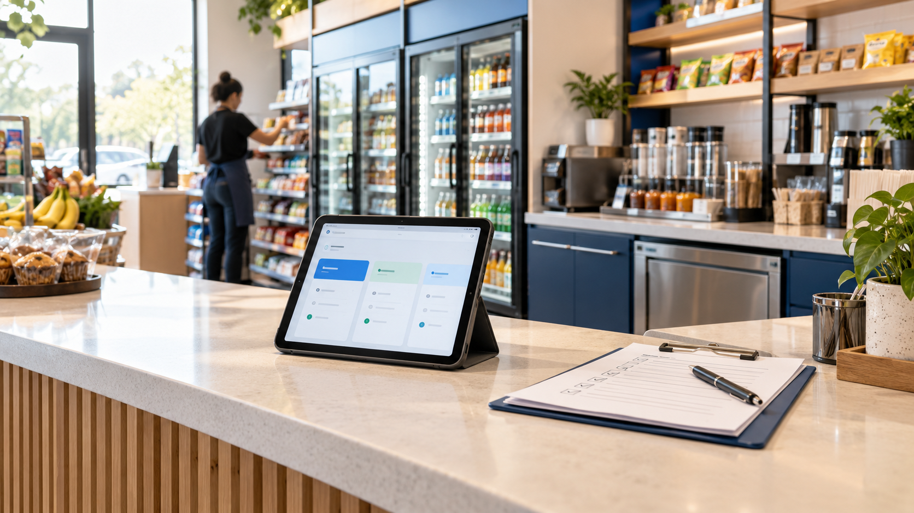

MOBILE OPERATIONS
LET Driver
A focused driver experience for loads, documents, stops, communication, and connected tracking.
I design and build clear digital experiences for the work behind the scenes — from a credible public website to the internal tools your team depends on.
Project-based engagements · scope and structure defined together

A mix of product thinking, interface design, and hands-on implementation — shaped around how people actually operate.
A focused driver experience for loads, documents, stops, communication, and connected tracking.
A list-first workspace that helps dispatchers find the right load, see context, and take action.
Dashboards and reporting views that surface what needs attention without adding noise.
Start with one clear need, then build toward the system that makes the next stage easier.
Responsive, polished experiences that explain your value and make the next step obvious.
Purpose-built tools for workflows that off-the-shelf software cannot quite fit.
Scheduling, time and attendance, forms, requests, and team coordination.
Reduce repetitive handoffs and connect the steps that slow your team down.
Turn scattered information into a view that supports better decisions.
Useful mobile workflows for drivers, field teams, customers, and operators.
Clear foundations that help the right people find, understand, and contact you.
Maintenance, improvements, and a steady partner after launch.
Every business has its own language, handoffs, exceptions, and pressure points. The best system makes those realities easier to navigate.

Clarify the audience, workflow, goal, and constraints.
Turn the idea into a focused structure and a realistic scope.
Design and implement the experience with room to grow.
Make it public, test the important paths, and hand it over clearly.
Learn from use, fix friction, and keep the system healthy.
The goal is not to add technology for its own sake. It is to make the work more understandable, more consistent, and easier to move forward.
Tell me what you are trying to improve, simplify, or bring to life. A rough idea is enough to start.
sonysimon.business@gmail.com ↗